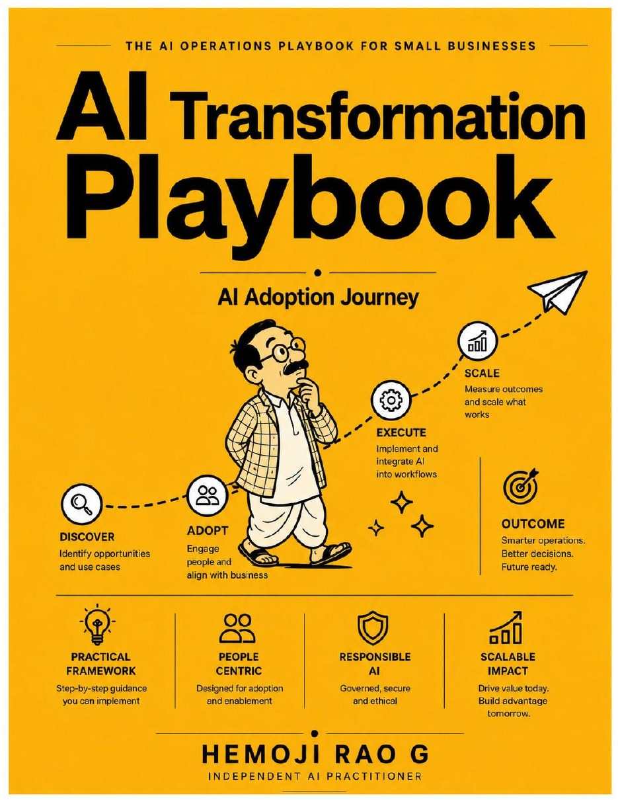

A practical framework
A Practical Framework for AI Adoption, Governance, and Execution, from boardroom strategy to shipped code.

The playbook follows one question from first idea to working, governed deployment: should we pursue AI here, and if so, how do we do it well? It is written for organizations under 100 employees and is designed to scale as headcount grows.
Decide whether AI is worth pursuing and where it fits: readiness, opportunity identification, prioritization, business cases, and architecture selection.
A universal maturity model applied at six levels, from enterprise and management down to team, project, developer, and QA practice.
Hands-on practices for developers and QA, plus agentic AI, RAG, MCP, local versus cloud models, ROI measurement, and enterprise case studies.
Each part answers one of the questions a responsible AI decision has to pass through.
The principles that run through every chapter.
A high-level outline. The PDF has the full table of contents with page numbers.
Read the full playbook. The PDF includes the complete text, tables, and worked examples. The running example throughout is Mylar Technologies, a composite illustrative company.
Download the PDF